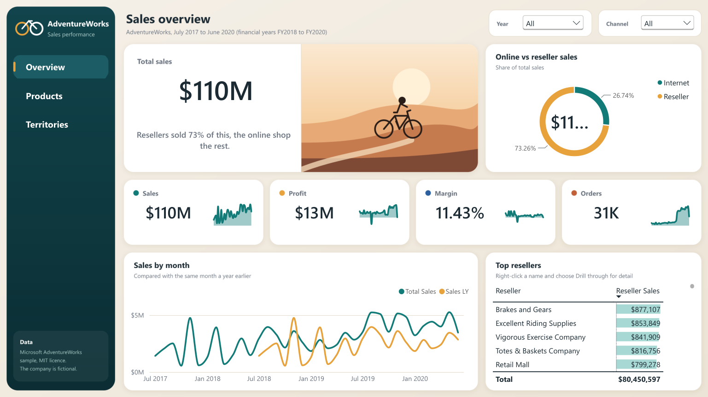

Power BI · DAX · Data modelling
Power BI sales report
Where does a bicycle company's money come from, and how do sales, profit and margin change from month to month? This four-page Power BI report on Microsoft's AdventureWorks sample data answers it, with a star schema, DAX measures and a separate view for each sales region.
- Problem
- A sales team needs one place to see sales, profit and growth by product, region and channel, and each regional manager should see only their own region.
- What I did
- I reviewed and tested the report in Power BI Desktop. Independent project, November 2026.
- Tools
- Power BI Desktop · Power Query · DAX · row-level security
- Result
- A four-page report: Overview, Products, Territories and a Reseller detail page. Over three financial years it shows $110M of sales, $13M of profit and an 11.43% margin, and that resellers sold 73% of everything.
July 2017 to June 2020
$13M of profit
the online shop sold 27%

What the report shows
-
Resellers sell most of the product. Of the $110M in total sales, 73.26% came through resellers and 26.74% through the online shop.
-
The margin is thin. Profit was about $13M on $110M of sales, an 11.43% margin. The Overview cards show it next to a small trend line for each measure.
-
Sales are compared with last year. The Sales by month chart draws each month beside the same month a year earlier, so growth and seasonal dips are easy to see.
-
One reseller can be opened in detail. The Top resellers table lists the biggest names, led by Brakes and Gears at $877,107. Right-click a name and choose Drill through to open the Reseller detail page.
How the report is built
The model is a star schema: one Sales table in the middle, joined to five lookup tables for dates, products, customers, resellers and sales territories. Sales has two dates, so the order date relationship is active and the ship date relationship is kept inactive, and a measure switches to it when needed.
A separate measures table holds 34 DAX measures. They cover the basics (total sales, cost, profit, margin, orders), the split between online and reseller sales, and comparisons with the same period last year.
Row-level security has three roles, Europe, North America and Pacific. Each one filters the sales territory table to its own group, so a regional manager sees only their own region. The report has four pages: Overview, Products, Territories and Reseller detail.
Key takeaways
- Model first. A clean star schema keeps the DAX measures short and the numbers the same on every page.
- Compare with last year. A single figure means little. The same month a year earlier shows whether it is good news.
- Security belongs in the model. Roles on the territory table mean every page respects them without extra work on each chart.
About the data
Where the data comes from: Microsoft's AdventureWorks Sales sample (MIT licence), a fictional bicycle company. The company and every figure are made up, and nothing here describes a real business. The report is a Power BI project on my laptop and is not published online, so the screenshot above shows it.